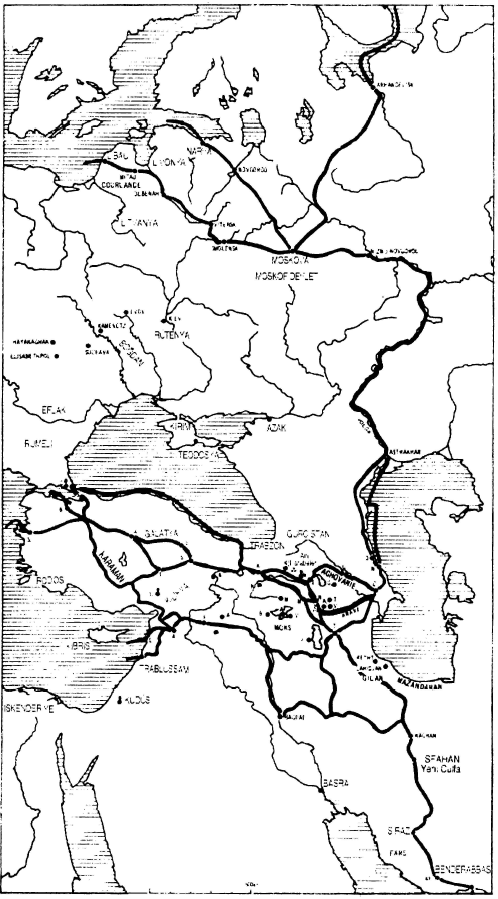

Tüccarın bakış açısı ve eylemi bizim için bildik şeylerdir: kâğıtları emrimize amadedir. Kendimizi onun yerine koymak, yazdığı veya aldığı mektupları okumak, hesaplarını incelemek, işlerinin akışını izlemekten daha basit bir şey yoktur. Fakat biz burada daha çok, deney yoluyla bildiği, ama onları bildiği için hiç de günü gününe uğraşmadığı, mesleğinin onu içine kapattığı kuralları anlamaya uğraşıyoruz. Bunları sistematik hale getirmemiz gerekiyor.
Mübadele karşılıklılık demek olduğuna göre, her A-B yoluna belli bir dönüş tekabül etmekte ve bu B-A dönüşü en az AB kadar karmaşık ve istendiği kadar dolambaçlı olmaktadır. Böylece mübadele kendi üstüne kapanmaktadır. Bir akım vardır. Elektrik akımları gibi, ticari akımlar da vardır: bunlar ancak kendi üstlerine kapalı olarak işlemektedirler. XIV. Louis’nin çağdaşı olan Reimsli bir tüccar, oldukça iyi bir formül kaydetmekteydi: “satış, alışı düzenler” Tabii ki, onu kârla birlikte düzenlediğini, düzenlemesi gerektiğini düşünmekteydi.
Eğer A Venedik, B İskenderiye ise (madem öyle, parlak örnekler seçelim), Aklan B’ye bir trafiğin arkasından, B’den A’ya bir dönüş gelecektir. Eğer hayali örneğimiz, 1500’lere doğru Venedik’te oturan bir tüccarı devreye sokuyorsa, yola çıkarken elinde, grappi, gümüş paralar, aynalar, cam boncuklar, yünlü kumaşlar olduğunu düşüneceğiz... Venedik’ten satın alınan bu mallar, İskenderiye’ye gönderilecek ve satılacaktır; bunların karşılığında muhtemelen, Mısır’dan karabiber, baharat veya ecza colli’leri alınacak, bunlar Venediğe götürülecek ve orada, çoğu zaman Fontego dei Todeschi’de (İtalyanca Fondaco det Tedeschi terimini değil de, Venedikçesini kullanmak üzere) olmak üzere satılacaklardır.
Her şey tüccarımızın isteğine göre gerçekleşirse, dört alış ve satış işlemi, fazla gecikme olmadan, birbirlerini izlemektedir. Fazla gecikme olmadan: bu düşüncenin İngiltere’de atasözü olmasından çok önceleri, herkes vaktin nakit olduğunu bilmektedir. "Li danari mortti”, parayı ölü bırakmamak, daha ucuza olsa bile, “venier presto sul danario per un altro viaggio” çabuk satmak gerekmektedir; Venedikli büyük bir tüccar olan Michiel da Lezze’nin, XVI. yüzyılın ilk yıllarında acentelerine verdiği emirler böyledir. Demek ki, cansıkıcı bir ara olmaksızın, Venedik’ten mümkün olduğunca çabuk satın alman mallar, tekneye yüklenmektedir; tekne öngörülen günde yola çıkmıştır ki, uygulamada bu durum nadirdir; mallar İskenderiye’de hemen alıcı bulmuşlardır, dönüş için istenen maddeler burada el altındadır; bunlar Venedik’te boşaltıldıktan sonra, kolaylıkla elden çıkartılmaktadır. Tabii ki, devrenin kapanmasına ilişkin bu optimal koşullar kural değillerdir. Bazen yünlü kumaşlar İskenderiye’de aylar boyunca bir akrabanın veya bir komisyoncunun ambarında kalmaktadır: renkleri hoşa gitmemiş veya kaliteleri beğenilmemiştir. Bazen de baharat kervanları zamanında varamamıştır. Veya dönüşte, Venedik piyasası Doğu Akdeniz ürünlerine doymuş durumdadır ve bu nedenle fiyatlar, olağandan düşüktür.
Bunlar söylendikten sonra, bizi şu anda ilgilendirenler şunlardır:
Bütün bunlar basit, fazlasıyla basittir. Fakat hiçbir şey, şemayı karmaşık hale getirmemizi engellememektedir. Ticari bir süreç zorunlu olarak, gidiş ve dönüş gibi iki daldan oluşmaktadır. Üçgen adı verilen ticaret, XVII. ve XVIII. yüzyıllarda Atlantik boyunca klasik hale gelmiştir: örneğin Liverpool, Gine kıyısı, Jamaika ve Liverpool’a dönüş; örneğin Bordeaux, Senegal kıyısı, Martinique, Bordeaux; örneğin Saint-Louis gemisinin sahiplerinin 1743’te, kaptan La Roche Couvert’e yapılma talimatını verdikleri şaşırtıcı yolculuk: Akadya’ya gitmek, oradan Morina yüklemek, bunları Guadeloupe’ta satarak, oradan şeker yüklemek, Le Havre’a dönmek. Venedikliler de bunun aynını, Signoria’nın düzenli olarak donattığı galere de mercato’larla, daha XV. yüzyıl öncesinden beri yapmaktaydılar. Örneğin 1505’te Venedik yurttaşı Michiel de Lezze, Sebastien Dolfin’e (“Berberistan yolculuğu” kadırgalarına yükleme yapacaktır) ayrıntılı talimatlar vermekteydi: ilk aşama olarak, Venedik-Tunus, nakit para, gümüş mocenighi getirecektir; Tunus’ta beyaz maden altın tozuyla değiştirilecektir; Valencia’da bunlar eritilecek ve kentin darphanesinde basılacak veya konjonktüre göre, yünle değiştirilecek veyahut da Venediğe getirilecektir. Aynı tüccarın başka bir düzenlemesi: İskenderiye’den alınan karanfilleri Londra’da satmak; Londra’dan getirilen yünlü kumaşları Doğu Akdeniz’de satmak. XVII. yüzyılda Thames’tan kurşun, bakır, tuzlu balık yüküyle çıkarak Livorno’ya giden herhangi bir İngiliz gemisi de üç kollu bir ticaret yapmaktadır; Doğu Akdeniz’de elindeki nakdin ona kuru üzüm, “yünden” pamuk, baharat (bunlardan hâlâ bulunmaktadır) veya ipek, hatta Malvoisie şarabı yüklemesine izin verdiği iskeleye, Zante’ye, Kıbrıs’a veya Trablusşam’a yanaşacaktır. Hatta dört veya daha fazla aşamalı yolculuklar düşünmek de mümkündür. Doğu Akdeniz’den dönen Marsilya kayıkları, bazen İtalya iskelelerine teker teker uğruyorlardı.
XVII. yüzyılda Hollandalıların uyguladıkları “antrepo ticareti” ilke olarak çok kolludur ve onların Hind’den Hind’e ticaretleri, bütün belirtilere göre, aynı model üzerine kurulmuştur. Örneğin, Hollanda Kumpanyası Endonezya’daki Timor adasını korumanın maliyetine, yalnızca santal tahtası uğruna katlanmaktadır; bu tahtayı Çin’de bir mübadele parası olarak kullanmak üzere üretmektedir, çünkü santal Çin’de çok değerlidir; Kumpanya Hindistan’da Surat’a çok miktarda mal getirmekte, bunları ipekliler, pamuklular ve özellikle de, Bengal’deki ticareti için vazgeçilmez nitelikte olan gümüş sikkelerle değiştirmektedir, çok miktarda dokuma satın aldığı Coromandel’deki mübadele parası, Molukka baharatı ve tekeline sahip olduğu Japon bakırıdır; çok kalabalık olan Siam’da, çok miktarda Coromandel bezini hemen hemen kârsız satmaktadır, ama bunun nedeni, buradan Japonya tarafından talep edilen geyik derileri ile, ayrıcalık antlaşmasıyla tek alıcısı olduğu ve “oldukça iyi bir karla" Hind’de ve Avrupa’da sattığı, Liger kalayı elde etmesidir. Ve işler böyle sürüp gitmektedir. Hollandalılar, “Doğu Akdeniz ticaretleri için (zorunlu olan) guruş ve sekineleri” İtalya’dan elde edebilmek için, Cenova veya Livorno’ya Hind, Çin, Rusya, Silezya mallarını, aralarında ayırım gözetmeden veya Martinique kahvesi ve Marsilya’dan yükledikleri Languedoc yünlülerini taşımaktadırlar. Bu örnekler, basitleştirici “gidiş ve dönüş” şemasının neler kapsayabileceği hakkında bir fikir vermek içindir.
Nadiren basit olan devre kapaması, her zaman mala karşı malla, hatta mala karşı değerli madenle yapılamaz. Bu nedenden ötürü, kambiyo senetlerinin zorunlu ve düzenli kullanımı vardır. Telâfi aracı olan kambiyo senetleri, para faizinin Kilise tarafından yasaklandığı hıristiyan aleminde, bir de kredinin en sık rastlanılan biçimi haline gelmiştir. Böylece kredi ile telâfi birbirlerine sıkı sıkıya bağlıdırlar. Bunu iyi anlayabilmek için, küçük ve çoğu zaman şaşırtıcı olan örnekler yeterlidir; bunlar şaşırtıcıdır, çünkü belgelerimiz çoğunlukla anormal olanı sıradan olandan, amaca ulaşanından çok başarısız olunanı daha sık zikretmektedirler.
Bu eserin birinci cildinde, krediye ilişkin olarak, bazı ayrıntılarla birlikte, Medina del Campolu tüccar Simon Ruiz’in, hayatının sonlarında, 1590’dan sonra, risksiz ve fazla zahmete girmeden para kazanmak üzere, zaten tamamen meşru olan "ticari tefeciliği" nasıl uyguladığını anlatmıştım. Yaşlı tilki kendi şehrinin piyasasından, pöstekilerini İtalya’ya gönderen ve paranın ellerine geçmesi için taşıma süresini ve normal ödemeleri beklemek istemeyen İspanyol yün üreticileri tarafından çekilmiş kambiyo senetlerini satın almaktadır. Üreticiler alacaklarını elde etmekte acelecidirler, Simon Ruiz onlara, genelde yün alıcısına çekilmiş, üç ay vadeli bir kambiyo senedi karşılığında avans vermektedir. Mümkün olduğunda, kâğıdı normal değerinin altında satın almıştır ve bunu Floransa’ya yerleşmiş dostu, komisyoncusu ve vatandaşı Baltasar Suarez’e yollamaktadır. Suarez parayı tahsil etmekte, bu nakille, Medina del Campo’ya çekilmiş yeni bir kambiyo senedi almaktadır ki, Simon Ruiz bunun bedelini üç ay sonra alabilecektir. 6 ay geciken bu işlem, yün üreticileri ile onların Floransak müşterilerinin arasındaki muamelelerin, Simon Ruiz’in elinde nihai kapanışını temsil etmektedir. Bu böyle olmaktadır, çünkü ilgililer ticari gidiş- gelişlere başvurmamakta, Simon Ruiz de, 6 aylık bir kredi için, net % 5 kârla bu işi üstlenmektedir.
Ancak başarısızlıklar her zaman mümkündür. Bir piyasada kâğıt ve nakit, kambiyo senedinin likit para cinsinden az veya çok yüksek bir fiyattan oluşacak kurunu saptamak üzere, birbirlerine karşı oynamaktadırlar. Nakit bolsa kâğıt değerlenmekte veya tersi olmaktadır. İkinci kambiyo senedinin düzenli kârla doğrudan geri dönüşü işlemi bazen zor, hatta olanaksızdır, çünkü Floransa’da kambiyo senedi çok pahalıdır. Bu durumda Baltasar Suarez, kendi üzerine senet çekmek zorunda kalmakta (yani Simon Ruiz’in onun adına açık tuttuğu hesaba) veya Amiens veyahut Besançon’a ciro etmek durumunda kalmaktadır: böylece senet üç aydan daha uzun süren üçgen bir yolculuk yapacaktır. Bu gene iyidir! Fakat Simon Ruiz, işlem bittiğinde hesapladığı faizleri elde edemediğini farkedince sövüp saymaktadır. İyi oynamak istemektedir, ama güvenli bir şekilde. 1584’te yazdığı gibi, “guardar el dinero en caxa que arisgar en cambios y perder del principal, o no ganar uada” tercih etmektedir, kambiyolarda sermayesinden kaybetmek veya hiç bir şey kazanamama riskine girme yerine, kesesinin iplerini çekmeyi tercih etmektedir. Fakat Simon Ruiz kendini mağdur hissetse de, akım diğer taraf için normal olarak kapanmıştır.
Eğer şu veya bu koşullarda bir ticari akım, herhangi bir biçimde kapanamazsa, açıkçası yok olmaya mahkûmdur. Sık sık ortaya çıkan savaşlar, bazen bunu başarsalar da, genellikle yeterli olamamaktadırlar. Bir örnek verelim.
Kobalta dayalı mineral bir kökeni olan toz cam (özellikle kötü kalitedeyse, her zaman parlak uçlu bir kumla karışık olarak) ürünü, mavi süslemeler elde etmek üzere, porselen ve fayans imalathanelerinde kullanılmakta, aynı zamanda bezlerin beyazlatılmasında kullanılmaktadır. Caenlı bir tüccar (12 Mayıs 1784) toptancıya, yolladığı son partiden ötürü yakınmaktadır: “olağandan daha koyu ve daha fazla parlak kum içeren şu mavi cam tozundan hiç bulamıyorum”. Mavi cam tozu sağlayan bir firma olan, Main-üzeri-Frankfurt’taki Bensa Kardeşlerin, Rouen’da komisyonla çalışan bir perakendeciyle, Dugard ve oğulları firmasıyla olan mektuplaşması, otuz yıl boyunca öylesine monoton muameleleri gözler önüne sermektedir ki, mektuplar yıldan yıla, kelimesi kelimesine tekrarlanmaktadırlar. Tarihlerle birlikte, yalnızca Bensa firmasının bizzat üretip, Dugard ve oğullarına gönderdiği ve olağan olarak Amsterdam’dan, bazen Rotterdam’dan, istisnai olarak da Bremen’den mavi cam tozlarını yükleyen teknelerin kaptanlarının adı değişmektedir. Pürüzler nadirdir: geciken bir gemi, Rouen yakınlarında “sahilde" batan bir başkası (ama bu bir istisnadır), onaya bir rakibin çıkması. Variller Dugard ve oğullarının ambarlarında düzenli bir şekilde yığılmakta, bu firma da onları Dieppe, Elbeuf, Bernay, Louviers, Bolbre, Fonluinebleau, Caen’da satmaktadır. Satış her seferinde kredili olmakta, firma bunun karşılığında senet almakta, faturalarının bedelini ciro senet veya nakit göndererek ödemektedir.
Bensa kardeşler ile toptancımız arasındaki geri dönüş, mal olarak yapılabilir, çünkü Dugard her şeyin toptancılığını yapmaktadır -kumaşlar, Senegal, sakızı, kök- boya, Burgonya şarabı (fıçıda veya şişede), oraklar, balina dişi, indigo, İzmir pamuğu...-. Oysa, dönüş Alman mal sağlayıcısı taralından dayatılan bir usule göre para, poliçe veya senet cirosu yoluyla olmaktadır. Bir örnek, diğer yüz tanesinin yerine geçecektir. 31 Ekim 1775’te, Remy Bensa Frankfurt’tan Rouen’a yolladığı malların hesabını çıkartır: “olağan % 15 firenin çıkartılmasından sonra, onları 4470 L(ira), 10 s(ol) olarak hesaplıyor ve 2/3’ünü size 3 yıpranmak olarak bugünün tarihiyle 2980 L olarak, Paris’te benim hesabıma ödenebilir olarak çekiyorum”. Yıpranmalar, ödeme vadelidir ve her biri muhtemelen iki haftadır. Demek ki Dugard firması, vade tarihinde bir Paris bankerine (hep aynı) 2980 lira ödeyecek, o da parayı Frankfurt’a aktaracaktır. Bu pey ile harekete geçen kapanma işlemi, yıl sonunda tamamlanacaktır; o tarihte hesaplar kesilecek ve fark, namuslu tüccarlar arasında ödenecektir. Bu taraflardan biri kibar, iyi niyetli, hatırbilir olduğu tahmin edilen Dugard; diğeri de daha çok asık suratlı ve öğüt verici olan Frankfurt’takilerdir. Bu nihai hesap görme, sonuçta Paris ile Main-üzeri-Frankfurt arasında, kambiyo senetleri yoluyla bağlantıya tabidir. Bu bağlantı koparsa, işlemlerin sükûnetine elveda! Oysa, Fransız Devrimi’nin başlangıcıyla birlikte ortaya çıkan, tam da budur.
1793 Martında, Bensa’nın yanılsama içine düşmesine artık olanak yoktur: Hollanda’dan Fransa’ya her tür ticaret yasaklanmıştır ve Frankfurt’taki kişiler, Avrupa’yı yavaş yavaş saran bu savaş havası içinde, kendi doğru yerlerinin neresi olduğunu artık bilememektedirler: Bensa, Dugard firmasına “hiç de öyle olmadığımız halde, ülkeniz halkının düşmanı sayılıp sayamadığımızı bilemiyorum bayım, eğer öyleyse buna çok kızacağım, çünkü işlerimiz birden sona ermiş olacak” diye yazmaktadır. Fiili durumda işi bitireceklerdir, hem de çok çabuk, çünkü “Paris’e çekilmiş kâğıtlar bizde sürekli düşüyor, bundan, önemli ölçüde olmak üzere, daha da düşeceği sonucu çıkartılabilir” demektedir, sonuncu mektuplarından biri. Bunun anlamı, dönüş yollarının çaresiz bir şekilde tehlikeye girdiğidir.
Dönüşlerin gündelik bir çözümü olan senetler için, mali akımın sağlamlığı tabii ki başat olmaktadır. Bu sağlamlık, tarafların kişisel kredileri kadar, etkin bağlantı olanaklarına tabi olmaktadır. Hiç bir tüccar sürprizlere karşı korunmuş değildir, fakat bu arada, Amsterdam’da yaşamak, örneğin Saint-Malo’da yaşamaktan iyidir.
Saint-Malolu büyük bir tüccar olan Picot de Saint-Bucq, Peru’ya gönderilen Le Lis gemisinin yüküne para bağlamış olduğu için, 1747’de İspanya’ya geri dönmüş olan teknenin getirdiklerinden kendine düşeni elde etmek istemektedir. Bu durumda Saint-Malo’dan 3 Temmuzda, Cadiz’deki Jolif ve ortaklarına mektup yazar:... bana kabule şayan herhangi bir senet ciro edebilecek duruma geldiğinizde, bunların arasında Fransa Hindler Kumpanyasının, ne de acentelerinkinin bulunmamasını özellikle rica ediyorum...”. Cadiz’de Fransız Hindler Kumpanyası acentelerinin bulunması şaşırtıcı değildir; o da buraya, diğer kumpanyalar gibi. Uzak Doğu’daki ticareti için vazgeçilmez olan gümüş guruşlar (eski sekizlik sikkeler) yüklemeye gelmiştir. Eğer bir Fransız tüccar ona guruş emanet ederse, hemen karşılığında Paris’te ödenecek bir kambiyo senedi vermeye hazırdır. Acaba Picot de Saint-Bucq bunu neden reddetmektedir? Belki kumpanyayla bir hesabı vardır ve birçok işi birbirine karıştırmak istemiyordur. Belki de, Saint-Malolular ile Hindler Kumpanyası kedi ile köpek gibi geçinemiyorlardır. Veyahut da, muazzam kumpanyaların borçlarını ödeme konusunda kötü alışkanlıkları vardır. Bunların hiçbirinin önemi yoktur. Kesin olan şey, Saint- Bucq’ün muhatabının tercihine bağımlı olmasıdır. Bunun ilk nedeni, mektubunda da belirttiği geçerli bir olgudur: “Saint-Malo, bildiğiniz üzere, bir kambiyo piyasası değildir”. Saint-Maloluların ticari işlemlerindeki nakde düşkünlükleri bilindiğinde, değerli bir işaret.
Bir firma için, onu büyük kambiyo piyasalarıyla doğrudan temasa sokan kendi bağlantılarına sahip olmak, her zaman istenen bir şeydir. Pierre Pellet’nin 1728’de, kardeşi Guillaume’un kısa bir süre sonra Amsterdam’daki muhatapları olacak Jeanne Nanac’la evlenmesinden sonra, Bordeauxlu Pellet kardeşler bunu başarmışlardır; Amsterdam o sıralar en mükemmel ticari piyasadır. Burada mallara satış kanalı bulmak ve her yerden daha iyi yatırım olanaklarına sahip nakit parayı burada ciro etmek kolaydır; burada Avrupa’nın en düşük faiz haddinden borç alınmaktadır. Diğer hepsiyle bağlantılı olan etkin bir piyasadan hareketle, kolaylıkla mal gönderilebilmekte, kendine ve diğerlerine hizmet sağlanabilmekte, hatta zengin Hollandalı tüccarlarla bile iş yapılabilmektedir.
Aynı nedenlerin aynı sonuçları doğurmasından ötürü, Sete’teki Marc Fraissinet şirketi, 1778’de Amsterdam’da Fraissinet ve oğulları adında bir şubeye sahiptir. Amsterdamlı Cornelis van Castricum tarafından donatılmış olan Jacobuz Calhar'ma adlı Hollanda teknesi, 1778 Kasımında Sete’e vardığında, kaptan S. Gerkel, böylece oradaki Fraissinet firmasına tavsiye edilmiştir. Gemi Genel İltizam hesabına 644 tütün “sepeti” taşımaktadır, Genel İltizam Yönetimi 16.353 livre tutan bedeli hemen ödemiştir. Hollandalı armatör tarafından talep edilen hizmet basittir: işlemin parasının ona “çabuk ciro” ile gelmesinin sağlanması. Bunun üzerine kötü talih şunların olmasını istemiştir: 1) Kaptan Gerkel’in iltizamın “ödeme emri”ni Fraissinet firmasına teslim etmesi, onun da gecikmeden tahsilat yapması; 2) Amsterdam’daki Fraissinet ve oğullarının 1778 yılının sonunda iflas ederek, Sete’teki Marc Fraissinet firmasını arkasından sürüklemesi. Zavallı kaptan Gerkel hemen mahkemeye çıkartılır, davayı kazanır, sonra yarı yarıya kaybeder. Marc Fraissinet’nin aşikâr kötü niyetine ve müflise borç verenlerin taleplerine çarpar. Herkes, arı kovanına giren yabancı kredi- töre karşı cephe oluşturmuştur. Sonunda geri dönüş gerçekleşecektir, ama geç ve felâketli koşullarda.
Adalara veya Hind Okyanusuna -zamanın en verimli ticareti- yönelik uzun mesafe ticareti söz konusu olduğunda, dönüşler çoğu zaman sorun çıkartmaktadırlar. Bazen ileriye yönelik tahminlerde bulunup, tehlikeye atılmak gerekmektedir.
Açıkça spekülatif niyetler taşıyan Louis Greffulhe, kardeşini, Hollanda egemenliğindeki Küçük Antiller’den biri olan Saint-Eustache adasına yerleştirmiştir. İşlem birçok alanda verimli olmuştur, ancak rastlantılara bağlı olduğu için felâketle sonuçlanmıştır. Gerçekten de, Nisan 1776’dan itibaren, İngiltere’nin kendi kolonilerine karşı giriştiği savaşla birlikte, uluslararası hayat kararmış, Amerika ile bağlantılar güç ve kuşkulu hale gelmişlerdir. Bu durumda fonlar ülkeye nasıl getirilebilir? Adalardaki Greffulhe, umutsuzluk içinde, ortağı du Moulin’i (Louis’nin kayınbiraderi), tabii ki İngiltere’yle henüz barış halinde olan Fransa ve buradan da Amsterdam üzerine “cirolar elde etmek” üzere Martinique’e yollar. Amsterdam’daki ağabey, saçmalık! diye sövüp saymaktadır. “Oradan ne gelecek? Veya orada iyilerini bulamayacak ve işte yeni bir vade; veya orada Martinique’in en sağlam kişisinden Bordeaux veya Paris’e çekilen kâğıt alsa bile, bunlar Avrupa’da hemen daima protesto edilmektedirler ve parayı nerede geri alacağımızı Allah bilir. Oradan bize birkaç ciro çıkartırsa, Allah vere de, böyle bir durumla karşılaşmasak”. Cari formüllerin dediği gibi, kambiyo senedi “hesabın kapatılması” için, kuşkusuz hayranlık verici bir araçtır. Ancak aracın elin ulaşabileceği yerde, iyi kalitede ve etkin olması gerekir.
Ekim 1729’da (o sıralar Hindler Kumpanya’sındaki denizcilik mesleğinden ayrılarak, maceracı tüccar olmuştur) Mahe de la Bourdonnay Pondichery’dedir. Onunla daha önce de ortaklık kurmuş olan Saint-Malolu dostlarıyla burada yeni bir şirket kurmayı düşünmektedir. Bunlar ona fon ve Hind’den Hind’e ticaretinde kullanılan malları sağlayacaklar, o da bunları ya Moka’da, ya Batavia’da, ya Manilla’da, hatta ya da Çin’de kullanacaktır. Kârların ve yatırılan sermayelerin ülkeye geri dönmesi konuşunda, Mahe hayal gücünden yoksun değildir. Hindler Kumpanyası üzerine çekilmiş senetlerin meydana getirdiği sakin çözüm vardır, veya mal halinde dönüş olabilir (hemen ödeme yapılmasını isteyen bir ortağa, Hind bezinden 700 gömlek göndermiş bulunmaktadır: “Bu hiç bir müsadere tehlikesi taşımıyor” diye belirtmektedir. Bu dönemde Fransa’da yasaklanmış olan “boyalı bezler” için durumun böyle olmadığı bilinmektedir), veyahut da altın, Fransa’ya dönmekte olan bir teknenin yardımsever kaptanına emanet edilebilir (navlun ödememenin bir yolu, yaklaşık % 2,5 gibi bir tasarruf ve % 20 gibi ek bir kâr olanağı). Buna karşılık Mahe, Hind’de bulunan çok sayıda İngiliz ve Avrupalının itibar etliği, elmas halinde geri dönüşe sıcak bakmamaktadır. “Çünkü size açıkça itiraf etmeliyim ki, bu konuda kendime güvenecek kadar bilgili değilim, ama bu işi meslek olarak yapanlara güvenerek kendimi kazıklatacak kadar da (aptal) değilim” diye yazmaktadır. Eğer yeni şirket bu işi yapmazsa, Mahe elindeki fon ve mallarla, bizzat Fransa’ya dönecektir. Fakat, tercihan bir Portekiz teknesiyle, çünkü bu gemi, bazı Hind mallarının kârlı olarak satıldığı Brezilya’ya uğramaktadır. Bu durum bize geçerken, Mahe’nin, ikâmet etliği bu Brezilya kıyılarında tanıdığı ve gizli anlaşmalar yaptığı kişilerin olduğunu işaret etmektedir. Onun gibi büyük seyyahlar için dünya, herkesin birbirini tanıdığı bir köy haline dönüşmektedir.
Kaptan Pierre Blancard’ın 1806’da Paris’te yayınlanan gecikmiş, Doğu Hindler ve Çin ticareti elkitabı, Fransa adasına (bugün Maurice adası) yerleşmiş olan Fransız tüccarların, eskiden yaptıkları verimli oyunu işaret etmektedir. Onları çoğu zaman zenginleştiren, Hindlere yerleşmiş olan ve az veya çok meşru yollardan elde ettikleri senetleri ülkelerine göndermek isteyen İngilizlere, hiç de karşılıksız olmayan hizmetleridir. Fransız tüccarlar İngilizlere “altı ay vadeli ve Paris’e çekilmiş kendi poliçelerini, pagoda’dan yıldıza 9 frank kambiyodan vermekteydiler, bu onlar için rupiyi 2 frank 50 santime getirmekteydi” (Franklar ve santimler, Napoleon çağında yaşayan Blancard’ın bir yüzyıl önceki bu işlemleri kendi çağının parasına dönüştürdüğünü işaret etmektedirler). Bu poliçeler tabii ki boşluğa değil, Fransızların Hindlerde sağladıkları ve Parisli bankacılar tarafından, düzenli olarak ülkeye aktarılan ticari kârların üzerine çekilmekteydi, sonra bunlar İngilizler üzerine çekilmiş olan poliçeleri aklamaktaydılar. Bu mali akımın Fransa adası tüccarlarının kârına kapanması için, demek ki İngilizlerin kendi fon aktarım sistemlerinden yararlanamamaları, Hind Bksma bezlerinin Fransız tüccarlar tarafından yürütülen ticaretinin iyice yerleşik olması ve hem ticaret hem de kambiyo düzleminde, rupilerin livre’e dönüştürülmesinin, her seferinde lehte olması gerekmekteydi. Buna dikkat ettiklerinden emin olalım.
Mübadeleler böylece, dünyayı bölgelere ayırmakladırlar. Her kavşakta, her menzilde, ya yerleşik, ya da geçmekte olan bir tüccar hayal edilmelidir. Ve onun rolü, konumu tarafından belirlenmiştir: “Nerede olduğunu söyle, kim olduğunu söyleyeyim”. Doğumun, mirasın rastlantıları veya diğer beklenmedik durumlar, onları Yukan Styria’daki Judenburg’da sabitleştirmişse (1526-1548 arasında faal bir tüccar olan Clemens Körbler’in durumu gibi), bu durumda Styria demiri veya Leoben çeliği üzerine ticaret yapmak ve Linz fuarlarına devam etmek durumunda olacaktır. Toptancı ve üstelik Marsilya’daysa, piyasanın cari üç veya dört olanağı arasında seçim yapmak zorunda kalacaktır -bu tercihi ona, çoğunlukla konjonktür dikte edecektir-. Eğer XIX. yüzyıl öncesinde, toptancı tüccar aynı anda birçok faaliyette birden bulunuyorsa (dün söylendiği gibi “bütün yumurtaları aynı sepete koymamak”), acaba bu yalnızca bilgelikten miydi? Yoksa, çeşitli akımları sonuna kadar kullanması mı gerekiyordu (icat etmediği akımları), yani tam da onlar elinin altından geçerken? Bu faaliyetlerden tek bir tanesi, onu istenen yükseklikte yaşatamazdı. Bu “çokdeğerlilik” böylece ona dışarıdan, mübadelenin yetersiz hacimlerinden gelecektir. Devam ettiği bir kavşakta, toptancı her halükârda, büyük ticari dolaşıma giriş olanağına sahiptir ve perakendeciden, sürekli olarak daha az uzmanlaşmıştır.
Bu ticari ağ, belli sayıda kişiyi, aynı firmaya bağlı olan veya olmayan, bir akımın veya bir akım demetinin birçok noktasında yer alan acenteleri birbirine bağlamaktadır. Ticaret bu menziller, bu işbirliği ve bağlantılar sayesinde yaşamakta ve bunlar, ilgilinin artan başarısıyla, adeta kendiliğindenmiş gibi çoğalmaktadırlar.
İyi, çok iyi bir örneği bize, Rouergue’de doğan, Martinique’de sıradan perakendeci olarak geçirilen bir başlangıçtan sonra -onu buraya kardeşi çağırmıştır, talihlerinin parladığı anda “küflenmiş manyok unu, acımış şarap ve soğuk öküz etiyle” beslenmiştir-,Bordeaux’da toptancılık yapan Jean Pellet’nin (1694-1764) kariyeri tarafından sunulmaktadır. 1718’de Bordeaux’ya dönmüş, Mantinique’de oturan iki yaş büyük ağabeyi Pierre’le ortak olmuştur. Burada çok mütevazi sermayesi olan ve yalnızca adayla Bordeaux arasında ticaret yapan bir şirket söz konusudur. Her iki kardeş de ipin birer ucundan tutmaktadır ve Law sisteminin devasa bunalımının patladığı sırada, bu hiç de fena değildir. Adalardaki sürgün “bu yıl kayıpsız olarak tutunmuş olmaktan ötürü çok mutluyuz, çünkü tüm tüccarlar yalnızca kredilerine dayanarak çalışıyorlar” (8 Temmuz 1721 ) diye yazmaktadır. Bir ay sonra, 9 Ağustosta “Fransa’nın içinde bulunduğu durum ve varlığını çabucak kaybetme riskini sizinkiyle aynı derecede şaşkınlıkla görüyorum (kalem hâlâ Pierre’nin elinde): ne mutlu ki biz işlerin içinden, diğerlerinden daha iyi sıyrılacak durumdayız ve bu, bu ülkedeki (Martinique) bağlantımız sayesinde olmaktadır. Ne para, ne senet tutmamız gerekiyor” -sonuçta sadece mala oynamak. Kardeşler 1730’a kadar ortak olarak kalacaklar, sonra iş ilişkilerini sürdüreceklerdir. Her ikisi de, elde ettikleri ve az çok beceriyle sakladıkları muazzam kârlar sayesinde atılıma geçmişlerdir. 1730’dan sonra, yalnızca, bu ikisinden en riskli işlere gireni olan Jean’ın işlerini izleyebiliyoruz. Jean 1733’ten sonra oldukça zengindir, birçok komisyoncu ve sahip olduğu gemilerin “müteşebbis kaptan”larına dayanmakta ve bu yüzden de resmi bir ortağa ihtiyaç duymamaktadır. İş ilişkilerinin ve işlerinin sayısı sadece şaşırtıcıdır. İşte armatör, toptancı, gerektiğinde finansör, toprak sahibi, şarap üreticisi ve satıcısı, rantiyedir; işte Martinique, Santo-Domingo, Caracas, Cadiz, Biscaye, Bayonne, Toulouse, Marsilya, Nantes, Rouen, Dieppe, Londra, (tuzlu sığır eti alımları için), Brötanya (bez alınılan için) ile bağlantıları vardır ve diğerlerini saymıyorum. Tabii ki Paris, Cenevre, Rouen bankerleriyle de bağlantılıdır.
Bu çifte zenginliğin (çünkü küçük kardeşinden daha çekingen ve temkinli olmasına rağmen, Pierre Pellet de milyoner olacak kadar zenginleşmiştir) bir aile ortaklığının üzerinde kurulduğunu kaydedelim. Ve, Pierre’in 1728’de evlendiği genç kadının erkek kardeşi olan Guillaume Nayrac, iki kardeşin Amsterdam piyasasındaki muhatapları olmuştur. Ticaret mesleği bir güvenilir işbirlikçiler ile ortaklar ağından vazgeçemeyeceği için, fiili durumda aile çoğu zaman en aranılan ve en güvenilir çözümü sunmaktadır. İşte, siyaset çalkantıları içindeki hükümdar soy zincirlerinin tarihi gibi, tüccar ailelerinin belirleyici tarihini değerli kılan budur. Louis Damigny, Herbert Luthy, Hermann Kellenbenz’in çalışmaları bunun iyi birer gösterimleridir. Veya, Konsüllük ve İmparatorluk döneminde, Fransa Bankası naiplerinin listesini inceleyen Nonnald Szramkiewicz’in kitabı. Adı geçen bankanın, onu kuran ve hepsinin de veya hemen hemen hepsinin de beyaz madene ve İspanyol Amerika’sına bağlıya benzedikleri ailelerin tarihöncesi daha da tutku verici olacaktır.
Ailesel çözüm tabii ki tek çözüm değildir. XVI. yüzyılda, Fuggerler, kendi hizmetlerindeki, Cremona kökenli işgüderlere başvurmuşlardır. Bu otoriter çözümdü. Cremona kökenli Affaitadiler, gerektiğinde yerel firmalarla ortak olan şubeleri tercih etmişlerdir. Onlardan önce, Mediciler, konjonktürün emrettiği durumlarda, basit bir yazı oyunuyla bağımsız kalabildikleri bir şube sistemi kurmuşlardır; bu yolla, örneğin yerel bir iflasın, firmanın tümü tarafından üstlenilmesini önlemektedirler. XVI. yüzyılın sonundan itibaren, esnek, daha az masraflı ve daha hızlı olan komisyon sistemi yaygınlaşmaya başlamıştır. Tüm tüccarlar -örneğin İtalya veya Amsterdam’da olduğu gibi kendilerine aynı hizmeti veren diğer tüccarlar için komisyon yapmaktadırlar. Başkaları tarafından üstlenilen işlerden küçük bir yüzde almakla ve tersi durumda, kendi hesaplarındaki aynı kalemden düşmektedirler. Burada tabii ki ortaklıklar değil de, karşılıklı hizmetler söz konusudur. Genelleşen başka bir uygulama, şirketin piç bir şekli olan katılım'dır. Bu kurum, ilgilileri yalnızca tek bir işlem için ortak kılmakta ve gelecek iş için yenilenmesi gerekmektedir. İzleyen sahifelerde buna geri döneceğiz.
Ticari anlaşma ve işbirliğinin biçimi her ne olursa olsun, sadakat, kişisel güven, kesinlik, verilen emirlere uymayı gerektirmektedir. Bunun sonucunda, ortaya oldukça katı bir ticari ahlâk çıkmaktadır. Tüccarlar Hebenstreit ve oğulları, Rouenlı Dugard ve oğulları firmasıyla yarı yarıya hesap katılımı sözleşmesi imzalamışlardır. 6 Ocak 1766’da Hebenstreit firması Dugard firmasına “hiç bir gerek yokken ve hatta açık talimatımıza rağmen” onlara gönderdikleri Senegal sakızını “çok düşük bir fiyattan” sattıkları için, olabilecek en katı mektubu göndermişlerdir. Sonuç açıktır: “çok kötü bir fiyattan satış yapmanıza rağmen, sizden bizim yarımızı telâfi etmenizi istiyoruz”. “Dostane” bir çözüm önermektedirler; en azından “bu konuda bir üçüncü kişiye yazmamanız için”. Bu durum, böylesine bir işte, ticari dayanışmanın, Rouen’da bile, Amsterdam’daki tüccarın lehine etki ettiğinin kanıtıdır.
Güvenmek, itaat görmek. Simon Ruiz 1564’te Sevilla’da, mutlaka ondan daha genç ve herhalde onun gibi Kastilyalı olan, Valladolidli Geronimo adında bir acenteye sahiptir. Simon Ruiz haklı veya haksız, aniden kızar, genç adamı bilinen herhangi bir hatadan veya aşınnadan ölürü suçlar. Patrona bilgi veren ikinci bir acente, durumdan mutludur, ama işleri düzeltemez, tersine bozar. Geronimo beklemeden ortadan kaybolur, çünkü Sevilla polisi peşindedir. Fakat bu kaybolma, bir süre sonra Medina del Campo’da ortaya çıkmak ve efendisinin ayaklarına kapanarak özür dilemek içindir. Bir okuma rastlantısı, 1570 belgeleri arasında, Valladolidli Geronimo’nun adına rastlamama yol açtı. Aktarılan olaydan altı yıl sonra, Sevilla’da bez ve yünlü kumaş alanında uzmanlaşmış tüccarlardan biri haline gelmişti. Herhalde başarıya ulaşmıştır. Ayrıntılarının tam olarak belirgin olmamasına rağmen, bu küçük olay, bir tüccarın acentesinden, ortağından veya adamından talep ettiği, talep etme hakkına sahip olduğu öncelikli güven konusu üzerine güçlü bir ışık saçmaktadır. Ve aynı zamanda, efendi ile hizmetkâr, üst ile ast arasında, “feodal” bir şeylere sahip olan ilişkileri de aydınlatmaktadır. Bir Fransız tüccar memuru, XVIII. yüzyılın başında bile, hâlâ yakınlarda elinden kurtulduğuna memnun olduğu efendilerinin “boyunduruk"undan, “egemenlik” inden söz etmektedir.
Zaten, yabancı için Sevilla’mn yoldan çıkartıcı dünyasına girebilmenin tek yolu, burada sözü geçen kimselere, ne pahasına olursa olsun güvenmektir, daha sonra, aynı şekilde ve aynı nedenlerle yoldan çıkartıcı diğer bir kent olan Cadiz’de, Amerika’ya yönelik ve ilke olarak İspanyollara ayrılmış olan belirleyici ticarete girebilmenin de tek yolu buydu. Amerika için köprü başlan olan Sevilla ve Cadiz farklı kentlerdir, buraları sahtekârlığın, dalaverenin, yerel kural ve yetkililerle sürekli olarak alay etmenin geçer akçe olduğu kentlerdir, üstelik bu yetkililer, bir de bu işlerde suç ortaklığı yapmaktadırlar. Fakat bu yozlaşmanın ortasında, tıpkı İspanyol hırsızlarının buluşma yeri olan Triana mahallesi veya San Lucar de Barrameda meydanındaki kulağı kesikler ve alguazil’ler arasında da olduğu gibi, tüccarlar arasında bir “semt yasası” bulunmaktadır. Çünkü eğer güvenilir adam size ihanet ederse, yabancı tüccar olan siz hatalısınızdır, yasaların katılığı sizin tepenize acımasız bir şekilde inecektir. Oysa böyle durumlar çok nadirdir. Hollandalılar (XVI. yüzyılın sonundan itibaren) İspanyol filolarına mal yükleyebilmek için, düzenli bir şekilde ve cezaya uğramaksızın, bedel karşılığı satın aldıkları İspanyol adları kullanmakta ve böylece mallarını Amerika’ya götürmektedirler. Cadiz’de herkes, çoğu zaman yaldızları artık parlamayan soylular olan ve değerli maden külçeleriyle, denizötesinden gelen değerli mallar, hatta basit tütün kaçakçılığı alanında uzman olan ve mesleklerini bir sır olarak saklamayan metedores'i (kaçakçılar) tanımaktadır. Tehlikeye atılmaktan kaçınmayan, fırsat çıktığında gününü gün eden, toplumun iyi tabakaları tarafından parmakla gösterilen bu insanlar, büyük ticari kentin bizatihi ana dayanağı olan bir dayanışma sisteminin içine asli üyeler olarak katılmaktadırlar. Cargadores daha da önemlidir. Bunlar, kendilerine emanet edilen yüklerle birlikte, Hindler filosuna binen İspanyollar veya İspanyol vatandaşı olmuş kişilerdir. Yabancılar bunların kurallara uyup uymamasına bağımlıdırlar.
Bu ticari dayanışma biraz da, iş rekabetlerini, bireyle bireyin ve bundan da fazlası, kentle kentin veya “ulusla” “ulusun” rekabetini tabii ki dışlamayan bir sınıf dayanışmasıdır da. Çoğu zaman fazlasıyla basit bir şekilde söylendiğinin tersine, Lyon’a XVI. yüzyılda egemen olanlar “İtalyan” tüccarlar değil de, Luccalı, Floransalı, Cenevizli (onları uzaklaştıracak olan 1528 güçlüklerinden önce) kolonileridir; bunlar örgütlü ve rakip gruplar halinde olup, her biri “millet” halinde yaşamaktadır, İtalyan kentleri birbirlerinden nefret etme, aralarında kavga etme ve gerektiğinde birbirlerini diğerlerine karşı kullanma maharetini göstermektedirler. Bu tüccar grupları akrabaları, dostları, hizmetkârları, ticari muhatapları, muhasebecileri, kâtipleriyle birlikte düşünülmelidirler. Daha XIII. yüzyılda, Gianfigliazzi ailesi Güney Fransa’ya yerleştiğinde, Armando Sapori onların "con una vera Jolla eli altri italiani, altri mercatores nostri” geldiklerini söylemektedir.
Burada fetihler, bölgelere ayırmalar veya çekirdeklemneler söz konusudur. Akımlar ve ağlar, bunları sahiplenen ve gerektiğinde bunları başkalarına yasaklayan inatçı grupların düzenli egemenliği altındadırlar. Avrupa’da, hatta Avrupa dışında, bu gruplar biraz dikkat edilince kolaylıkla farkedilmektedirler. Şan-sili banker tüccarlar, Sarı nehirden Kanton sahillerine kadar olan Çin kesimini kat’etmektedirler. Güney kıyılarından başlayan başka bir Çin zinciri (özellikle Fu Kien kıyılarından itibaren), Japonya ve Endonezya ile Filipin adalarına doğru, uzun zaman sömürgeci bir yayılma edası taşıyacak olan, bir dış ekonomik Çin resmetmiştir. 1638’den sonra, Japon ticaretinin atılımına kapalı kapılar ardından hükmeden Osakalı tüccarlar, takımadaların tümünün hareket halindeki ekonomisini meydana getirmektedirler. Banyan tüccarların Hindistan içinde ve dışındaki muazzam yayılmalarından daha önce söz etmiştik: Tavernier’nin dediğine göre, bunların İsfahan’da çok sayıda bankeri bulunmaktadır; İstanbul, Astrakan, hatta Moskova’da da bunlardan vardır. 1723’te, Moskova’daki bir Hindli tüccarın karısı, kocasının ölümünde, onunla birlikte cenaze ateşinde yanmak istemiştir -bu isteği reddedilmiştir-. Hemen “isyan eden Hindli tüccar kadın, zenginliklerini de götürerek, Rusya’dan ayrılmaya karar verir”. Bu tehtid karşısında Rus yetkililer geri dönüş yaparlar. Aynı olay 1767’de tekrarlanacaktır. Bundan daha iyi bilinen ve seyirlik olanı, “kibar” veya müslüman Hindli tüccarların Filipinler ve Endonezya kıyılarına varana kadar, Hind Okyanusundaki yayılmalarıdır. Bunların ağları Portekizlilerin sürprizlerine ve Hollandalıların kabalıklarına direneceklerdir.
Avrupa’da ve Akdeniz’de, Batı’da ve Doğu’da, her yerde İtalyanlar ve gene İtalyanlar vardır. İstanbul’un 1204’teki zaptının öncesinde ve bundan da fazlası, sonrasında, Bizans imparatorluğundan daha güzel bir yağma alanı var mıdır? İtalyan ticari fethi, kısa bir süre sonra Karadeniz kıyılarına kadar varacaktır; İtalyan tüccar, denizci, noterleri burada evlerinde gibi olacaklardır. Batı’yı yüzyıllar süren yavaş bir şekilde fethetmeleri ise daha da olağanüstüdür. 1127’den itibaren Ypres fuarlarındadırlar. “XIII. yüzyılın ikinci yarısında Fransa’yı, aslında Floransa, Piacenza, Milano, Roma ve Venedik’teki büyük kumpanyaların şubelerinden ibaret olan, güçlü firmalarıyla doldurmuşlardır bile. Brötanya (1272-73’ten itibaren), Guingamp, Dinan, Quimper, Quimperle, Rennes ve Nantes’da..., Bordeaux, Agen, Cahors’da yerleşik olarak bulunmaktadırlar”. Champagne fuarlarını, Bruges trafiklerini, daha sonra Cenevre fuarlarını, daha da sonra Lyon’un muzaffer fuarlarını, birbiri ardı sıra yeni bir hayata götürmüşlerdir; Sevilla ve Lizbon’un ilk ihtişamını yaratmışlardır; Anvers’in kuruluşunda, daha sonra da Franklurt’un ilk atılımında pay sahihi olacaklardır; nihayet, Besançon fuarları denilen Ceneviz fuarlarının efendileri olacaklardır. Akıllı, canlı, başkaları için çekilmez, haset edildiği kadar nefret edilen İtalyanlar her yerdedirler. Kuzey denizlerinde, Bruges'de, Southampton'da, Londra’da. Akdeniz'in azman teknelerinin gemicileri rıhtımları, liman meyhanelerini işgal etmektedirler; tıpkı İtalyan tüccarların kentleri istila etmeleri gibi. Protestanlar ile kalolikler arasındaki en büyük mücadele alanının Atlantik Okyanusu olması bir raslantı mıdır? Güney denizcilerine düşman olan Kuzey denizcileri, bu geçmiş, birçok inatçı öfkeyi açıklayacaktır.
Diğer ele gelir ağlar, Mansa tüccarlarının çok inatçı ağlarıdır. Ayrıca, “Fuggerler yüzyılı" sırasında kendi üstüne de çıkan. Yukarı Almanya tüccarlarının, gerçekte birkaç onyıl süren ağı, ama ne kadar parlak! Hollandalıların, İngilizlerin, Ermenilerin, Yahudilerin, İspanyol Amerika’sındaki Portekizlilerin ağları. Büyük bir dış Fransız ağı yoktur, bunun istisnası, Batı ve Doğu Akdeniz’deki Marsilyalılar ve XVIII. yüzyılda Basklar ve Kakılanlarla paylaşılan, İber yarımadası pazarının fethidir. Bu gevşek Fransız başarısı anlamlıdır: başkalarına egemen olmamak, onların egemenliğine girmektir.
Ermeni ve Yahudi tüccarlar hakkında çok sayıda bilgiye sahibiz. Ancak bunlar, bu ayrıntı ve monografi kitlesini bütünsel çizgilerine ulaştırmaya yetmemektedirler.
Ermeni tüccarlar, İran mekânının tümünü sömürgeleştirmişlerdir. Zaten şah Büyük Abbas’ın onları yerleştirdiği, İsfahan'ın büyük ve canlı dış mahallesi Culfa’dan hareketle, tüm dünyaya yayılmışlardır. Hind’in bütününü çok erkenden kat’etmişler ve eğer bazı bilgileri abartmıyorsak, bunu özellikle İndüs ve Ganj ile Bengal körfezi arasındaki bölgede başarmışlardır. Fakat güneyde, Portekiz Goa’sında da görülmektedirler; burada 1750’lere doğru, Fransız veya İspanyol tüccarlar gibi “Sainte-Rose manastırından borç almaktadırlar”. Ermeni Himalaya’yı de geçerek Lhassa’ya ulaşmıştır ve buradan, 1500 km.’den fazla uzaklıktaki Çin sınırlarına kadar ticaret yapmaktadır. Bu sınırdan içeri hiç nüfuz edememiştir. Çin ve Japonya, merak uyandırıcı bir şekilde ona kapalı kalmışlardır. Fakat İspanyol Fili- pinlerinde çok erkenden Ermeni kaynamakladır; muazzam Osmanlı imparatorluğunun her yerinde vardırlar ve burada ortaya, Yahudilerin ve diğer tüccarların mücadeleci rakipleri olarak çıkmaktadırlar. Avrupa cephesinde, Ermeni Moskof devletindedir; buradaki durum, kumpanyalar kurmasına ve İran ham ipeğinin mübadelesini yapmasına izin verecek kadar iyidir; bu ipek el değiştire değiştire, Rus topraklarını geçerek Arhangelsk’e (1676) ve Rusya'ya komşu ülkelere kadar ulaşmaktadır. Bazı Ermeniler Moskof devletine yerleşmekte, onun bitmez tükenmez yollarından, İsveç’e kadar transit ticaret yapmaktadırlar, buraya ayrıca Amsterdam üzerinden, mallarıyla birlikte de gelmektedirler. Polonya’nın tümü, ondan daha fazla olmak üzere Almanya ve özellikle de Leipzig fuarları onlar tarafından taranmaktadır. Alçak Ülkeler’dedirler, yakında İngiltere’de ve Fransa’da olacaklardır. XVII. yüzyılla birlikte, Venedik’ten itibaren olmak üzere, XVI. yüzyılın sonunda çok karakteristik olmak üzere, Doğulu tüccarların şu ısrarlı istilasına katılarak, İtalya’da rahatça yerleşeceklerdir. Bundan da erken Malta'dadırlar, belgeler onlardan “poveri ehristiani armeni" olarak söz etmektedirler, kuşkusuz poveri, ama burada “per alcuni suoi negotii” bulunmaktadırlar (1552, 1553). Her zaman memnuniyetle kabul edilmemektedirler, bunu söylemeye gerek var mı? 1623 Temmuzunda, Marsilya konsülleri, bir Ermeni ve ipek balyaları işgalinden yakınmak üzere krala yazmışlardır. Bu, kent ticareti için tehlikelidir, konsüller “bu ipeklileri şu büyük Halep piyasasında, İzmir’de ve başka yerlerde satma ve namuslu bir kâr sağlama kolaylığına sahipken, biraz daha fazla kazanmak için dünyanın öbür ucuna kadar koşturan (tabii ki Marsilya’ya kadar) daha açgözlü bir millet yoktur ve öylesine domuz gibi yaşamaktadırlar ki, çoğu zaman ot yemektedirler’’ -yani sebze-. Ama Ermeniler bu nedenden ötürü dışarı atılmamışlardır, çünkü aşağı yukarı çeyrek yüzyıl sonra, şövalye Pol tarafından Malta yakınlarında, Ocak 1649’da ele geçirilen İngiliz teknesi, İzmir’den Livorno ve Toulon’a, “çoğu gemide bulunan 64 Ermeniye ait olan 400 ipek balyası” götürmekteydi. Ermeniler ayrıca Portekiz, Sevilla, Cadiz’de, Amerika kapılarında da bulunmaktadırlar. 1601’de Cadiz’e, doğrudan Goa’dan geldiğini iddia eden, Jorge de Cruz adlı bir Ermeni gelmiştir.
Kısacası, işte ticari dünyanın hemen tamamında mevcutturlar. Bu zafer, onların dilinde ve onlardan biri olan Loucas Vananlesti tarafından yazılan, 1699’da Ams- terdam’da basılan bir ticaret kitabında apaçık ortaya çıkmaktadır: “bizim milletten olan siz tüccar kardeşlerimiz için” kaleme alınan bu kitap, ayrıntının hiç de şaşırtmayacağı üzere, Culfalı olan bir koruyucunun, bay Bedros’un adına ithaf edilerek kaleme alınmıştır. Kitap İncil’in sözleriyle başlamaktadır: “Başkalarına... yapma”. İlk kaygısı: tüccarı ticari piyasaların ağırlıkları, ölçüleri ve paraları konusunda bilgilendirmektir. Hangi piyasalar? Tabii ki tüm Batı’dakiler, ama aynı zamanda Macaristan, İstanbul, Krakow, Viyana, Moskova, Astrakan, Novgorod, Hayderabad, Manilla, Bağdat, Basra, Halep, İzmir... Pazarların ve malların incelenmesi, Hind, Seylan, Java, Amboine, Makasar, Manilla piyasalarını ayrıntılı hale getirmektedir. Kalburdan geçirerek yakından incelenmeyi hakeden bu bilgi kitlesi içinde en ilginci, gene, Avrupa’nın çeşitli kentlerindeki karşılaştırmalı konaklama bedelleri veya Mısır’dan Angola’ya, Monotopa’ya ve Zanzibar’a kadar, Afrika’nın delikler ve esrarlarla dolu bir tasviridir. Ermenilerin ticari evreninin görüntüsü olan bu küçük kitap, bize gene de onların masalsı başarılarının anahtarını vermemektedir. Gerçekten de, bu kitabın ticari tekniği, denklem kurma'nın yararlarını övmekle yetinmektedir (bu her şeye yetecek midir?). Kitap muhasebe sorununa yaklaşmamakta ve bize bu evrenin ticari, kapitalist mantığının ne olabileceğini açık etmemektedir. Bu nihayetsiz trafikler nasıl kapanmakta ve birbirlerine bağlanmaktadır? hepsi de muazzam Culfa menzili, ve yalnızca onun tarafından mı birbirlerine bağlanmıştır? Yoksa, benim düşündüğüm gibi, başka aracı menziller var mıdır? Doğu ile Batı arasında bir bağlantı hattı olan Polonya’nın Lwow kentinde, kendi adaleti, matbaaları, bir sürü iş bağlantısı olan küçük bir Ermeni kolonisi -onlarla verilen adla “İranlılar”- Osmanlı imparatorluğu yönündeki muazzam araba sevkiyatına egemendir. Bu araba kervanlarının efendisi, kervanbaşı her zaman bir Ermenidir. Acaba, Culfa tüccarlarının ellerinde tuttukları iki muazzam tablo -Batı ve Doğu’dan başka bir şey değil- bu araba sevkiyatıyla mı birbirlerine kaynak yapmaktadırlar? Acaba Ermeni, sonuca varmak için yeterli bir işaret olarak mı, Lwow’da “gürültülü ve saygısız bir lüks” sergilemektedir?
Yahudi tüccarların ağları da dünyanın tümüne yayılmaktadır. Onların başarıları, Ermeni performanslarından çok daha eskidir: daha Roma antikitesinden itibaren Yahudi veya Yahudi olmayan Syri her yerde mevcuttur; M. S. IX. yüzyılda, İslam fethi tarafından açılan ilişkileri kullanan Narbonne Yahudileri, “Kızıldeniz veya İran körfezinden geçerek, Kanton’a ulaşmışlardı”; Geniza belgeleri, yüz keresine karşılık bir örnek olmak üzere, lfrikiya’dan, Keyruan’dan, Mısır’a, Habeşistan’a ve yarımada Hindistan’ına yönelik, Yahudi tüccarların ticari bağlantılarını bize açık etmektedirler. X.-XIII. yüzyıllarda Mısır’da (İrak ve İran’da da olduğu gibi) çok zengin Yahudi aileleri, uzak mesafe ticareti, banka, bazen bir eyaletin tümünü kapsayan vergi toplama işlerine girmişlerdi.

ERMENİ TÜCCARLARIN İRAN, TÜRKİYE VE MOSKOF DEVLETİNDE, XVII. YÜZYILDAKİ BAZI GÜZERGÂHLARI
Bu harita Ermeni tüccarların karayolu ağının yalnızca bir parçasını göstermektedir. Türk İmparatorluğu -Halep, İzmir, İstanbul- ve Hazar ve Volga yılları aracılığıyla Rus ülkeleriyle olan bağlantı. Moskova'dan hareketle Libau, Narva ve Arkangelsk'e üç güzergâh. Büyük Abbas'ın Ermenileri 1603-1605’te sürdüğü yeni Culfa, Ermenilerin dünya üzerindeki faaliyetlerinin merkezidir. Araş üzerindeki eski Culfa, yeni kentin tüccar nüfusunun esasını sağlamıştır. Yeni Culfa’nın tüccarlarının büyük tüccar ve toptancı olduklarına dikkat edilmelidir.
Yahudi tüccarlar böylece, yüzyıllarca süren bir zaman içinde sürüp giderek, bir süre önce gözlerimizi kamaştırmış olan İtalyan uzun ömürlülüğünü aşmaktadırlar. Fakat süre rekorunu kıran tarihleri, aynı zamanda zirvelere çıktıktan sonra, korkunç düşüşlere uğrama rekorunu da kırmaktadır. Paranın ve kalbin gizli vatanı Culfa’da gruplanmış olan Ermenilerin tersine, İsrail köklerinden kopuk, başka yerlere taşınmış olarak yaşamaktadır ve bu onun dramıdır; aynı zamanda, başkalarına karışmama konusundaki ısrarlı iradesinin ürünüdür de. Öte yandan, oldukça eskimiş olan uyumları ve sağlıklarının zirvesindeki ticari ağları tek bir darbede parçalarken, dramatik bir kaderi vahşi bir şekilde kopartan felâketleri aşırı değerlendirmemek ve birbirlerine yaklaştırmamak gerekir. XIII. yüzyıl Fransa’sındaki gibi ciddi başarılar veya XV. yüzyıl Polonya’sındaki gibi zafer halindeki başarılar da olmuş; İtalya’nın çeşitli bölgelerinde, Orta Çağ İspanya’sında ve başka yerlerde bunların benzerleri yaşanmıştır.
1492’de İspanya ve Sicilya’dan, 1541’de Napoli’den kovulan sürgünler iki yöne doğru bölünmüşlerdir: Akdeniz İslam dünyası, Atlantik ülkeleri. Yahudi tüccarlar, Osmanlı ülkesinde Selanik, Bursa, İstanbul, Edirne’de, XVI. yüzyıldan itibaren toptancı ve vergi mültezimi olarak, muazzam servetler edineceklerdir. 1492’den sonra onlara ülkesinde tahammül edecek olan Portekiz, başka bir geniş kümelenmenin hareket noktasıdır. Amsterdam, Hamburg, çoktan zenginleşmiş veya çabucak yeniden zenginleşecek olan tüccarların ayrıcalıklı varış noktalarıdır. Bunların, Hollanda’nın İber yarımadası yönündeki -Lizbon yönünde olduğu kadar, Sevilla, Cadiz ve Madrid yönlerinde de- ticari genişlemesine yardım ettiklerinde hiçbir kuşku yoktur. Aynı zamanda, Piemonte, Venedik, Mantova, Ferrara’da uzun süreden beri faal kolonilerin bulunduğu ve XVII. yüzyılda Livorno’nun yeni talihinin onların sayesinde parlayacağı İtalya yönünde de. Amerika’nın ilk koloni ihtişamının, özellikle de Brezilya ve Antiller’de şekerkamışı ve şeker ticaretinin genişlemesinin yaratıcıları arasında yer aldıklarında da hiçbir kuşku yoktur. Aynı şekilde, XVIII. yüzyılda Bordeaux’da, Marsilya’da, 1290’da kovulup ve Cromwell (1654-1656) ile birlikte geri döndükleri İngiltere’dedirler. Sefarad Yahudilerinin, Atlantiğe dağılan Akdeniz Yahudilerinin bu boom’u, Hermann Kellebenz’in kişiliğinde tarihçisini bulmuştur. Başarılarının, Amerikan beyaz maden üretiminin az çok erkenden hissedilen tersine dönüşüyle kırılması, ortaya ciddi sorunlar çıkartmıştır. Eğer bir konjonktür onların hakkından gelebildiyse (fakat acaba bu doğru mudur?), bunun nedeni, sanıldığı kadar güçlü olmamalarıdır.
Sefaradların silinmesi, İsrail için bir sessizlik dönemi değilse bile, en azından nisbi bir geri çekilme dönemini başlatmıştır. Diğer Yahudi başarısı, Orta Avrupa’nın seyyar satıcılarından hareketle, yavaş bir şekilde oluşacaktır. Bu Aşkenaz yüzyılı olacaktır; yani ilk ışıltıları, XVIII. yüzyılın prensler Almanya’sındaki “Saray Yahudileri”nin zaferleriyle parlayacak olan, Orta Avrupa kökenli Yahudilerin yüzyılı. Bu konuda yazılmış kutsal hayat öykülerine yönelik bir kitaba rağmen, burada olağanüstü “girişimci’’lerin kendiliğinden bir atılımı söz konusu değildir. Otuz Yıl Savaşının bunalımıyla kapitalist kadrolarını büyük çapta kaybetmiş olan bir Almanya’da, bir boşluk meydana gelmiş ve Yahudi ticareti bunu XVII. yüzyıldan itibaren doldurmuştur; bu ticaretin yükselişi, örneğin Leipzig fuarlarında olmak üzere, oldukça erkenden gözle görülür hale gelmiştir. Fakat Aşkenazların büyük yüzyılı, Rothschild’lerin gözkamaştırıcı uluslararası başarılarıyla, XIX. yüzyıl olacaktır.
Bunları söyledikten sonra, Sombart’a karşı, kapitalizmi kesinlikle Yahudilerin icat etmediklerini ekleyelim ve kapitalizmin şu günde, şurada, ve şu veya bu gibi kişiler tarafından icat edildiği düşüncesine katılmadığımızı bildirelim. Yahudiler kapitalizmi icat etmiş veya yeniden icat etmiş olsalardı bile, bu birçok başka kimsenin refakatiyle olmuş olurdu. Yahudiler kapitalizmin sıcak noktalarında olduklarından ötürü mü onu icat etmiş sayılmaktadırlar? Yahudi zekâsı bugün dünya ölçeğinde bilinmektedir. Bu nedenden ötürü, nükleer fiziği Yahudilerin icat ettiğini mi söyleyeceğiz? Amsterdam’da, hisse senetlerinin erteleme ve primleri üzerindeki oyunları yöneten kişiler haline geldikleri kesindir, ama bu işlemlerin başlangıcında, Isaac Lemaire gibi, Yahudi olmayan kişiler görülmekte değil midir?
Sombart’ın yaptığı gibi, İsrail dininin yönlendirici hatlarıyla çakışan bir kapitalist zihniyetten söz etmeye gelince, bu Max Weber’in protestan açıklamasına, onunkilerle aynı derecede iyi ve kötü delillerle katılmak demektir. Bu dosya, İslamiyet için de aynı derecede savunma yapabilir, çünkü islamiyetin toplumsal ülküsü ve hukuki çerçeveleri “ta başlangıçtan itibaren, yükselen bir tüccar sınıfının fikir ve hedefleriyle uyum içinde biçimlenmişlerdir”, fakat “bu nedenden ötürü, bizzat İslam diniyle bir bağlantısı olduğu söylenemez”.
Portekizli tüccarların, muazzam İspanyol Amerika’sı karşısındaki rolleri, yeni incelemeler tarafından aydınlatılmış bulunmaktadır.
Portekiz ve Kastilya taçları 1580-1640 arasında, aynı kralın başı üzerinde birleşmişlerdir. İki ülkenin, bu gerçekten çok teorik olan birliği (Portekiz, bir cins “dominyon” olarak, geniş bir özerkliği korumaktadır), Portekizliler tarafından Atlantik kıyısındaki bazı esas noktalarda tutulan Brezilya ile, Andların kalbindeki Potosi İspanyol ülkesi arasında, gene teorik olarak, sınırların silinmesine katkıda bulunmuştur. Zaten, adeta mutlak bir ticari boşluk nedeniyle, İspanyol Amerika’sı, yabancı tüccarların maceralarına kendiliğinden açılmaktadır ve Portekizli tüccar ve denizciler uzun zamandan beri, İspanyol topraklarına kaçak olarak girmektedirler. Farkettiğimiz bir olaya karşılık, yüz tanesi elimizden kaçmaktadır. Bu konuda kanıt olarak, Antiller denizinde, birçok çekişmeye konu olan inci adası, Santa Margarita’ya ilişkin, 1558 tarihli tekil bir tanıklığı vermek istiyorum. O yıl bu adaya “Portekizli mürettebat ve yolcuları taşıyan, Portekiz krallığına ait bazı karavelalar ve gemiler” gelmiştir. Sözümona Brezilya’ya gitmektedirler, ama bir fırtına ile bir rastlantı onları adaya sürüklemiştir. Bize bilgi veren kişi “bu şekilde gelenler bize çok kalabalık olarak gözüktüler” diye eklemektedir, “ve bunun kötü niyetle olduğu kaygısını taşıyoruz”, maliciosamenete. Portekiz varlığı, ileride mantıken daha vurgulu hale gelerek, tüm İspanyol Amerika’sına ve özellikle başkentlerine -Mexico, Lima- ve başlıca limanlarına -Santo Domingo, Hindler Carthagena’sı, Panama, Buenos Aires- nüfuz edecektir.
İlke olarak 1540'ıa kurulan ve bir dizi felâketle yok olan bu sonuncu kent, 1580’de Portekizli tüccarların belirleyici bir kalkılan sayesinde yeniden kurulmuştur. 40 tonluk kadar olan küçük teknelerin Brezilya ile Rio de la Plata arasındaki sürekli bir trafiği, kaçak olarak şeker, pirinç, kumaş, zenci köleler, belki de altın getirmekteydi. Bu tekneler “carregado de reas de prata”, gümüş riyallerle yüklü olarak dönüyorlardı. Buna paralel olarak, tüccarlar Peru’dan Rio de la Plata yoluyla, Pernambouc, Bahia ve Rio de Janeiro’dan mal satın almak üzere, nakitle gelmekteydiler. Bu yasadışı ticaretin kârları, Francisco Soarez (1597) adlı bir tüccara göre % 100-500 arası ve bazen de inanılmaz bir rakam olan % 1000 olmaktaydı. “Eğer tüccarların bu trafik hakkında bilgileri olsaydı, Hindler Carthagena’sında bu kadar malı rizikoya sokmazlardı” diye eklemektedir. “Bu nedenle Rio (de la Plata) büyük bir ticaretin yoludur ve Peru’ya ulaşmak için en yakın ve en kolay yoldur”. Haberli bir küçük Portekizli tüccar grubu için, Rio de la Plata, 1622’ye kadar, gerçekten Potosi gümüşünün yasa dışı çıkartılmasının bir yolu olmuştur. 1605’te, bu kaçakçılığın yılda 500.000 cruzado olduğu tahmin edilmektedir. Bu işe yalnızca, Cordoba Aduano Secisinin, iç gümrüğünün (7 Şubat 1622) kurulması son vermişe benzemektedir.
Ancak, Portekiz nüfuzu, İspanyol sömürgelerinin Atlantik kıyılarıyla sınırlı kalmamıştır. Makaolu bir Portekizli tüccar Joao da Gama, 1590’da Pasifigi aşıyor ve Acapulco’ya yanaşıyordu. Ama bu ona yaramamıştır. Ancak, Mexico’da, Lima’da Portekizliler, “elmastan, adi komisyona kadar; en sefil zenciden, en değerli inciye kadar” her şeyin satıldığı dükkânlar açmaktaydılar, tabii sömürge toprağında lüks olan, uzaktaki vatan mallarını unutmaksızın. şarap, zeytinyağ, buğday unu, ince yünlüler, artı büyük toptan ticaretin kendiyle birlikte, ya Avrupa’dan, ya da Filipinler’den getirdiği baharat ve ipekliler, artı burada da- bütün bu trafiklerin gerçek motoru olan Peru gümüşüne yönelik, muazzam bir kaçakçılık. Henüz vasat olan Santiago de Chili gibi bir kentte (XVII. yüzyılda herhalde 10.000 kişilik bir nüfus) bile, işte Portekizli bir tüccar; daha önce Afrika Gine'sinde ikâmet etmiş olan ve vatandaşı Juan Bautista Perez ile 1626-1633 arasında ortak olarak, Panama ve Hindler Carthagena’sına kadar yolculuk yaparak, buralardan zenci köleler, çeşitli mallar, değerli tahtalar satın alan -13.000 pesoya kadar varan muazzam avanslarla- Sebastian Duarte.
Fakat bu ihtişam ancak bir süre devam etmiştir. Üstelik bir de tefecilik yapan bu Portekizli dükkâncılar, çok çabuk zenginleşmektedirler. Kent halkı onlara karşı kolaylıkla ayaklanmaktadır -1634’den itibaren Potosi’de olduğu gibi-.Kamuoyu onları Yeni Hıristiyanlar olmakla -bu çoğu zaman doğrudur- ve gizlice Yahudiliği sürdürmekle -bu mümkündür- itham etmektedir. Engizisyon sonunda işe karışacak ve bir dava ve yakma salgını bu hızlı refaha son verecektir. Bu sonuncu olaylar iyi bilinmektedir: bunlar 1646, 1647 ve 1648 Mexico yargılamaları veya Portekiz asıllı birçok büyük tüccarın da yer aldığı, 11 Nisan 1649’daki yakmadır. Fakat bu başka bir tarihtir.
Lizbon’u merkez alan, Atlantiğin Afrikalı ve Amerikalı iki kıyısına yayılan, Pasifiğe ve Uzak Doğu’ya bağlı olan Portekiz sistemi, Yeni Dünya’da on veya yirmi yıl içinde serpilen muazzam bir şebekedir. Bu canlı serpilme, zorunlu olarak uluslararası önemde bir olgudur. Bu olmasaydı Portekiz 1640’ta herhalde “restorasyondan geçmezdi”, yani İspanya’ya karşı bağımsızlığını elde edemezdi. Bu restorasyonu, çoğu zaman yapıldığı gibi, Brezilya şekerinin atılımıyla açıklamak, her halükârda yetersiz olacaktır. Zaten hiçbir şey bize, Brezilya şekeri “devre”sinin bizzat bu ticari bolluğa bağlı olmadığını söylememektedir. Gene hiçbir şey, bize bu bolluğun, Sefaradların Amsterdam’da olduğu kadar Lizbon ve Madrid’deki, biraz kısa süren şanlarında da rol oynamadığını söylememektedir. Potosi’den kaçırılan gümüş, Gezegen kral IV. Felipe’nin kreditörleri olan Portekizli Yeni Hıristiyanların sayesinde, Sevilla rıhtımlarına düzenli olarak boşaltılan resmi gümüşe katılacaktır. Fakat geniş ve narin sistem ancak birkaç on yıl sürebilecektir.
Ağlar birbirlerini tamamlamakta, ortak olmakla, birbirlerine eklenmekte, aynı zamanda çatışmaktadırlar da. Çatışmak, her zaman birbirlerini tahrip etmeleri demek değildir. “Birbirlerini tamamlayan düşmanlar” vardır; husumet içinde birarada oluşlar vardır ve bunlar sürmekledir. Hıristiyan tüccarlar ve Suriye ile Mısır tüccarları, yüzyıllar boyunca çatışmaktadırlar, bu doğrudur, ama bu çatışmalarda terazi birbirleri için vazgeçilmez olan bu hasımlardan birinin tarafına yatmamaktadır. Avrupalı çölün sınırındaki kentlerin ötesine asla geçmemektedir: Halep, Şam, Kahire. Bunların ötesinde, kervanlar dünyası, müslümanlar ve yahudi tüccarlar için özel avlanma sahasıdır. Ancak İslamiyet, Haçlı Seferleriyle birlikte, muazzam dolaşım alanı olan İç Denizi kaybetmiştir.
Aynı şekilde, geniş Osmanlı imparatorluğunda tiftik kumaş alıcısı olan ve belgelerin Bursa veya Ankara’da yerleşik olarak gösterdikleri Venedikliler veya Raguzalılar, burada ancak geçici olarak bulunmaktadırlar. Türk topraklarında en ciddi Batı ilerlemesi, Raguzalıların lehine gerçekleşmektedir, ama bu ilerleme, kabaca Balkanların ötesine geçememiştir. Hatta Karadeniz XVI. yüzyılla birlikte İstanbul’un tahsisli gölü haline gelmekte veya yeniden gelmektedir ve hıristiyan ticaretine, ancak XVIII. yüzyılda, Kırım’ın Ruslar tarafından fethiyle (1783) yeniden açılacaktır. Osmanlı imparatorluğunun içinde, Batı karşıtı tepki Yahudi, Ermeni ve Rum tüccarların lehine etki edecektir.
Benzeri direnmelere başka yerlerde de rastlanmaktadır. Kanton’da 1720’den itibaren, bir cins Hindler kumpanyası karşıtı olan, Çinli tüccarların Co-Hong’u ortaya çıkmıştır. Asıl Hindistan’da ise, Banyanların ağı, eğer buna inanmak mümkünse, İngiliz işgâlinden sonra da yaşamaya devam edecektir.
Bu direnmelere ve bu rekabetlere, tabii ki husumet ve kin de refakat etmektedir. En güçlü, her zaman hedef tahtasıdır. Mandelslo (1638) Surat’da ikâmet ettiği sırada şöyle yazmıştır: “(kendileri de çoğu zaman tüccar olan müslümanlar) gururlu ve saygısız olmak için Benjanlara (Banyanlar) adeta köleymişler gibi ve tıpkı Avrupa’da acı çektirilen yerlerde Yahudilere yapıldığı gibi, küçümseme ile davranmaktadırlar”. Yer ve zaman değiştirerek, aynı tavır XVI. yüzyıl Batı aleminde, Simon Ruiz ve dostlarının demelerine göre, her şeyi yutmaya hazır ve başkalarını atlatmak üzere fitili almış olan Cenevizlilere karşı kaydedilecektir. Veya XVII. yüzyılda Hollandalılara karşı. Daha sonra İngilizlere karşı.
Bütün ağlar, hatta en güçlüleri hile, bir gün veya başka birinde, gerilemelere, dalgalanmalara tanık olmaktadır. Ve bir ağın merkezindeki her zayıflama, sonuçlarını konumlarının bütününde ve herhalde en fazla çevresinde hissettirmektedir. Bulanık ve tartışılabilir bir formülle, İtalya’nın gerilemesi olarak adlandırdığımız şey sırasında, Avrupa’da meydana gelen durum böyledir. “Gerileme” herhalde tam uygun kelime değildir, ama XVI. yüzyılın sonundan itibaren İtalya karmaşık durumlar ve güçlüklerle karşılaşmıştır; o sıralar Almanya, İngiltere ve Doğu Akdeniz’deki konumlarım kaybetmektedir. Benzeri olaylar, XVIII. yüzyılda Battık mekânında da, Hollanda’nın İngiltere’nin yükselen gücü karşısında silinmesiyle ortaya çıkmıştır.
Fakat egemen tüccarların silindikleri yerlerde, telâfi yapıları yavaş yavaş su üstüne çıkmaktadır. “Fransız Toskana’sı”, yani Fransa’ya yerleşen İtalyanlar, 1661 civarında herhalde daha önce 1648 mali bunalımından beri bocalamaktadırlar; güçlü bir şekilde koksalmış olan, Fransa’daki Hollanda ağı XVIII. yüzyılın başından beri güçlüklerle karşılaşmaktadır. Ve sanki rastlantıymış gibi, yuvarlak bir tarih olarak, 1720’ye doğru, daha fazla sayıda olan Fransız toptancılar, Fransız limanlarının göz kamaştırıcı atılımını örgütlemişler, ilk büyük çaplı Fransız kapitalist yapılarının taslağını oluşturmuşlardır. Fransız tüccarlarının bu atılımı, kısmen “yerli" unsurlar, kısmen de, eskiden Fransa’dan çıkmış olan protestanların merak uyandırıcı yeniden yerleşmeleriyle gerçekleşmiştir. Aynı ikâme olgusu, Almanya’da Saray Yahudilerinin lehine, İspanya’da Katalan ve Bask tüccarlarının yanı sıra, devlete borç verenler mertebesine yükselmiş olan Cinco Gremios Mayores’in Madridli tüccarlarının yükselişiyle tahmin edilir hale gelmektedir.
Tabii ki bu ilerlemeler, ancak ekonomik yükselişlerin sayesinde mümkündür. XVIII. yüzyılda yerel veya daha doğrusu ulusal düzeyde yeni talihlerin yükselişini Fransız refahı, Alman refahı, İspanyol refahı sağlamıştır. Fakat Fransa'da, Almanya’da ve İspanya’da yabancı tüccarların egemenliği kesintiye uğramasaydı, XVIII. yüzyılın atılımı buralarda başka türlü gelişecek, herhalde ek bazı güçlüklerle karşılaşılacaktı.
Ancak, başarısız hale gelen faal bir ağ, her zaman kayıplarını telâfi eğilimindedir. Şu veya bu bölgeden ayağı kaydırılınca, avantajlarını ve sermayelerini başka bir yere taşımaktadır. Bu en azından, güçlü ve çoktan beri biriktirici hale gelmiş bir kapitalizmin oyunda olduğu her seferinde kuraldır. Örneğin, XV. yüzyılda Karadeniz’de ticaret yapan Cenevizli tüccarlar için durum böyledir. İstanbul’un alınmasından (1453) çeyrek yüzyıl kadar sonra, Türklerin onların Kırım’daki karakollarını ve özellikle de önemli Kefe kontuarını ele geçirmelerinden sonra (1479), Cenevizliler Doğu Akdeniz’deki tüm konumlarını hemen terketmemişlerdir: örneğin Sakız’da 1566’ya kadar kalacaklardır. Fakat, faaliyetlerinin en iyi kısmı, onların Batı’da, İspanya’da, Fas’ta zaten sahip oldukları ve kısa bir süre sonra da Anvers ve Lyon’da sahip olacakları ağı güçlendirmekte ve geliştirmektedir. Doğu’da bir imparatorluk ellerinden kaçmıştır, onlar da Batı’da bir yenisini kurmaktadırlar. Aynı şekilde, Hind Okyanusu boyunca ve Filipinler ile Endonezya’da yenilen, eski başarı alanlarında ölümüne yaralanan Portekiz imparatorluğu, XVI. yüzyılın son yılları ve XVII. yüzyılın ilk yıllarıyla birlikte, Brezilya ve İspanyol Amerika’sına çekilmiştir. Aynı şekilde, XVII. yüzyılda büyük Floransa firmalarının sansasyonel geri çekilmelerine rağmen, İtalyan tüccarları, Venedik’ten itibaren Orta Avrupa’ya doğru açılan yollar aracılığıyla, 1600’lerden sonraki konjonktürün onlara getirdiği düş kırıklığına, bu bölgede hafif, ama güvenilir bir telâfi bulmuşlardır. Bir Bergamolu, yani bir Venedik uyruğu olan Bartolomeo Viatis’in, Nuremberg’de, bu kentin en zengin tüccarlarından biri (hatta en zengini) haline gelmesi, böylece tamamen rastlantı değildir; İtalyanların Leipzig, Nuremberg, Frankfurt, Amsterdam, Flamburg’da faal hale gelmeleri; İtalyan mal ve modalarının Viyana’ya ve bundan da fazlası, faal Krakow ve Lwow menzilleri aracılığıyla Polonya’ya ulaşmaya devam etmeleri de rastlantı değildir. Polonya arşivlerinde muhafaza edilen mektuplar, XVII. yüzyılda İtalyanları Polonya kent ve fuarlarında göstermektedir. Bunlar, herkesin farkedeceği kadar kalabalıktırlar. Şu küçük hikâyeden karar verilsin: 1645’te bir İspanyol askeri. Alçak Ülkeler’de, Varşova’daki Polonya kraliçesine armağan olarak danteller ve isteği üzerine, Fransa modasına göre giydirilmiş bir taş bebek götürmek üzere, ulak olarak görevlendirilmiştir; kraliçe bu bebeği “hizmetindeki terziler ona bu modaya göre elbise diksinler” diye istemiştir, çünkü “Polonya’daki elbiseler onu boynu omuzlarına gömülmüş gibi göstermekledirler ve zevkine uygun değillerdir”. Ulak varır, ona elçi muamelesi yapılır. Sır gibi söylediğine göre “Latince bilmem, bana şöyle böyle yardımcı oldu, çünkü aksi taktirde dillerinden tek bir kelime anlamazdım... ve dilimizden yalnızca İtalya’da kullanılan signoria tarzına (dar sigııoıia) dair bir şeyler biliyorlar, çünkü bu ülkede çok sayıda İtalyan tüccarı var”. Dönüş yolunda, “Polonya krallarının taç giydirilme yeri olan” Krakow’da duraklar ve burada da “her şeyden önce ipekli ticareti yapan, çok sayıda İtalyan tüccar”ını işaret eder. Kuşkusuz minik, ama anlamlı bir tanıklık.
Yukarıdaki örnekler, akım ve ağların efendisi olan büyük tüccarların, sıklıkla yabancı azınlıklara mensup olduklarını işaret etmektedirler; bunlar ya ulusları (Yakışıklı Philippe veya I. François Fransa'sında veya 11. Felipe İspanya’sında İtalyanlar), ya da farklı inançları nedeniyle -Yahudiler, Ermeniler, Banyanlar, Parsiler, Rusya’da Raskolnikiler veya müslüman Mısır’da Hıristiyan Kiptiler- yabancıdırlar. Neden bu eğilim? Her azınlığın birbirine sarılmaya, iç yardımlaşmaya, kendini savunmaya doğru doğal bir eğilime sahip olduğu açıktır: dışarıda bir Cenevizli, bir Cenevizliyle; bir Ermeni, bir Ermeniyle dayanışma halindedir. Charles Wilson, yakınlarda yayınlanan bir makalesinde, Londra’nın en büyük iş alanların, özellikle şu zenaat tekniklerini yayma rolleri işaret edilmiş olan, sürgün Fransız protestanlarının sızmasını, belli bir eğlenme payıyla birlikte aydınlatmış bulunmaktadır. Öte yandan bunlar, İngiliz başkentinde her zaman bütünsel ve kimliğine kıskançlıkla bağlı bir grup oluşturmuşlardır ve hâlâ da oluşturmaktadırlar. Öte yandan, bir azınlık kendini kolaylıkla baskı altına alabilen çoğunluk tarafından sevilmediği duygusuna kapılmaktadır, bu da onu, bu çoğunluğa karşı fazla bir ar duygusuna sahip olmaktan alakoymaktadır. Acaba bu, mükemmel bir “kapitalist” olmanın biçimi midir? Gabriel Ardant “Homo economicus (o bundan, kapitalist sistem tarafından tamamen kazanılmış insanı anlamaktadır) benzerine karşı şefkat duygularına sahip değildir. Karşısında alıcılar, satıcılar, borç verenler, borç alanlar gibi, ilke olarak tamamen ekonomik ilişkiler içinde olduğu ekonomik ajanlardan başka bir şey istememektedir” diye yazabilir. Aynı çizgi üzerinde, Sombart Yahudilerin üstünlüğünün “kapitalist zihniyet”in oluşumuna, dinsel hükümlerin dindaşlara karşı yasakladıklarına, diğerlerine karşı izin vermesinde görmektedir.
Fakat açıklama kendiliğinden tersine dönmektedir. Kendine özgü yasaklama- lan olan, tefecilik ve hatta para mesleklerini -yalnızca ticari olmayan çok sayıda servetin kaynağı- gayrimeşru olarak gören bir toplumda, “anormal"leri, toplumun tümü için gerekli, ama kötü görevlere hapseden, toplumsal oyunun kendi değil midir? Eger Alexandre Gerschenkron'a inanacak olursak, ortodoks sapkınları olan Raskolnikilerin Rusya’da başına gelenler böyle olmuştur. Bunların rolleri, Yahudiler veya Ermenilerinkilerle karşılaştırılabilir niteliktedir. Orada olmasalardı icat edilmeleri gerekmez miydi? Venedik yurttaşı Marino Sanudo, onlara ters düşecek tedbirlere kızarak, “Yahudiler bir ülkede fırıncılar kadar gereklidirler" diye haykırmaktadır."
Bu tartışmada, “kapitalist zihniyet" yerine, toplumdan söz etmek daha iyi olacaktır. Orta Çağ ve Modern Avrupa’nın siyasal kavgaları ve dinsel tutkuları, yabancı haline getirilen çok sayıda bireyin cemaatlerden atılmasına; bu da onların azınlık olarak sürgüne gitmelerine yol açmıştır. İtalyan kentleri, tıpkı klasik dönemdeki Eski Yunan kentleri gibi, kavgacı eşek arısı kovanlarıdır: surların içinde yurttaşlar ve sürgünler vardır -bu öylesine yaygınlaşmış bir toplumsal kategoridir ki, onlara bir cins adı verilmiştir: fuorusciti-, Bunların, onları kovan, sonra da bir gün yeniden kabul eden kentlerin göbeğine varacak şekilde mallarını, iş ilişkilerini korumaları, bir aileye karşılık, on Cenovalı, Floransak, Luccalı ailenin öyküsüdür. Bu fuorusciti özellikle tüccar olduklarında, böylece servet yoluna atılmış değiller midir? Büyük ticaret, “uzak mesafe ticareti"dir. Onlar buna mahkûmdurlar. Sürgünler, uzaklaşmaları olgusundan ötürü başarıya ulaşmaktadırlar. Örneğin 1339’da bir grup soylu, Cenova’da sürekli denilen dogelerle birlikte kurulmuş olan halk yönetimini reddeder ve kenti terkeder. Bu sürgüne giden soylular, nobili vecchi adı verilenleridir; halk yönetimine tabi olarak kentte kalanlar ise nobili novi’dir; bu kırılma, sürgünler kentlerine döndükten sonra da devam edecektir. Ve sanki raslantıymış gibi, dışarıyla olan büyük işlerin efendileri haline gelenler -hem de uzaktan- nobili vecchi’dir.
Başka sürgünler: Amsterdam’da Museviliğe geri dönen, İspanyol veya Portekizli marranolar. Gene kayda değer sürgünler: Fransız Protestanları. Nantes fermanının 1685’te yürürlükten kaldırılması kuşkusuz daha sonra Fransız ekonomisinin efendisi olan Protestan Bankasını ex nihilo yaratmamış, ama onun gelişimini sağlamıştır. Yeni bir türden olan bu fuorusciti, krallık içindeki ilişkilerini, onun kalbi olan Paris’e varana kadar korumuşlardı. Geride bıraktıkları sermayelerinin önemlice bir bölümünü, çok kereler dışarı çıkartmayı başarmışlardı. Ve tıpkı nobili vecchi gibi, bir gün güçlü olarak geri dönmüşlerdir.
Sonuçta bir azınlık, sanki önceden ve sağlam bir şekilde inşa edilmiş bir şebeke gibidir. Lyon’a varan balyanın, yerleşmek için bir masa ve bir yaprak kâğıttan başka bir şeye ihtiyacı yoktur, Fransızlar buna çok şaşırmaktadırlar. Fakat bunun nedeni bu piyasada doğal ortaklara, habercilere, Avrupa’nın çeşitli piyasalarında muhataplara sahip olmasıdır. Kısacası, bir tüccarın kredisini meydana getiren ve edinmek için yıllarca uğraşılan her şey. Aynı şekilde, Leipzig ve Viyana’da -yoğun iskân edilmiş Avrupa kesiminin kıyısında kalan bu kentler, XVIII. yüzyılın atılımıyla doğrulmakladırlar- Alçak Ülkeler’den gelenler. Names fermanının kaldırılmasından sonra sürgün gelen Fransızlar (bunların ilkleri, Leipzig’e 1688’de gelmiştir) İtalyanlar, Savualılar, Tirollüler gibi yabancı tüccarların serveti karşısında şaşkına dönmemek mümkün değildir. Hiç veya hemen hemen hiç istisna yoktur: şans yabancıdan yanadır. Kökeni onu uzak kemlere, piyasalara, ülkelere bağlamakta; uzak mesafe ticaretine, büyük ticarete atmakladır. Acaba “felâket her şeye iyi gelir” diye düşünmek gerekir mi? Ama bu fazlasıyla iyi olur.